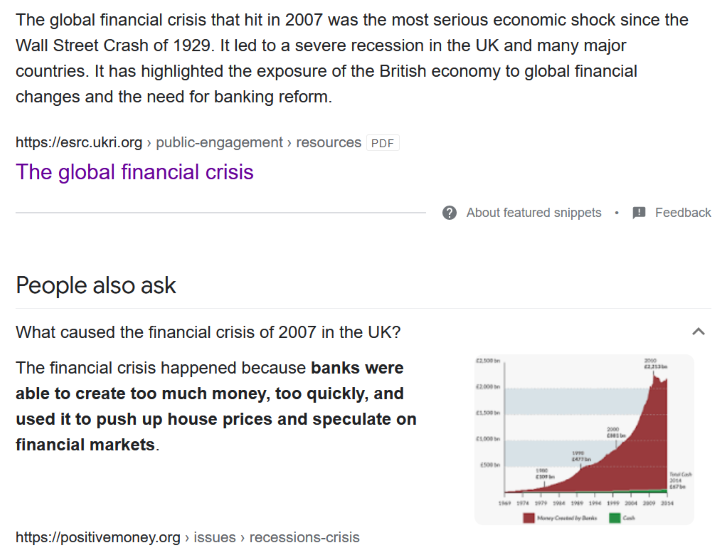
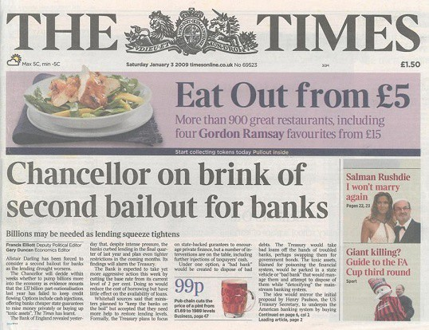
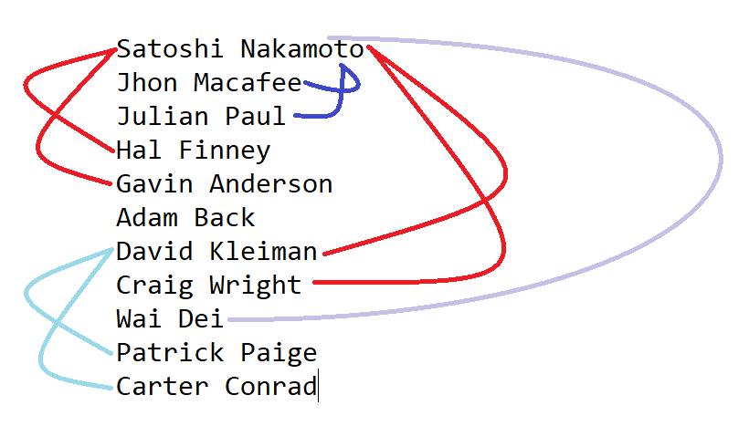

Possibility 1


After the Financial Crisis in 2007-08 no one was able to recover the loss, such a loss suffered by Satoshi
Nakamoto. But he was different instead of sitting and calculating the loss he stood
to take an action. An action that changed the world, A dream that every futurist cypherpunk wanted to live, A
system that was capable to shake the roots of the current banking system.
It was The BITCOIN. Being a futurist he was able to see the rise of this digital currency, but probably was not
able to utilize a single satoshi.
He mined a million Bitcoin from the protocol & encrypted in a pendrive. Being aware of the fraud he was doing
with the open source BTC community he kept a backdoor to get the coins again.
He fabricated a perfect plan but in 2013 the plan failed after the tragic death of Dave. The fortune was
gone...
In order to counter this they planned to reveal the identity of satoshi......, and according to the plan Craig
declared
himself as satoshi in 2015 falsifying all the previous records, everything was good. But someone didn't wanted
to them swallow the
coins alone, The lawsuit was being filed against the Craig by Ira kleiman brother of dave for claiming sole
ownership of bitcoin in 2018, Again the plan failed.
Might be as a backup to all Satoshi embeded a message at every point from the genesis block to till 2018 for
someone, for someone a path to his fortune. As he himself can never recover the bitcoins alone.
The people involved in this planning were :

I know seeing Cater and Patrick in the list is strange but there is a point
which we can't unsee.